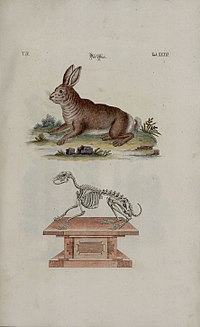
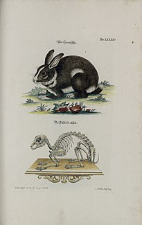

Rabbits are small mammals in the family
Leporidae of the order Lagomorpha (along with the hare
and the pika). Oryctolagus cuniculus includes the European rabbit
species and its descendants, the world's 305 breeds of domestic rabbit.
Sylvilagus includes 13 wild rabbit species, among them the seven types
of cottontail. The European rabbit, which has been introduced on every
continent except Antarctica, is familiar throughout the world as a wild
prey animal and as a domesticated form of livestock and pet. With its
widespread effect on ecologies and cultures, the rabbit (or
bunny) is, in many areas of the world, a part of daily
life—as food, clothing, a companion, and a source of artistic
inspiration.
Terminology
Male rabbits are called bucks; females are called does. An older term
for an adult rabbit is coney (derived ultimately from the Latin
cuniculus), while rabbit once referred only to the young animals.
Another term for a young rabbit is bunny, though this term is often
applied informally (particularly by children) to rabbits generally,
especially domestic ones. More recently, the term kit or kitten has
been used to refer to a young rabbit. A group of rabbits is known as a
colony or nest (or, occasionally, a warren, though this more commonly
refers to where the rabbits live). A group of baby rabbits produced
from a single mating is referred to as a litter, and a group of
domestic rabbits living together is sometimes called a herd
Taxonomy
Rabbits and hares were formerly classified in the order
Rodentia (rodent) until 1912, when they were moved into a new
order, Lagomorpha
(which also includes pikas). Below are some of the genera and species
of the rabbit.
Hares are precocial, born relatively mature and mobile with
hair and good vision, while rabbits are altricial, born
hairless and blind, and requiring closer care. Hares (and cottontail
rabbits) live a relatively solitary life in a simple nest above the
ground, while most rabbits live in social groups in burrows or
warrens. Hares are generally larger than rabbits, with ears that are
more elongated, and with hind legs that are larger and longer. Hares
have not been domesticated, while descendants of the European rabbit
are commonly bred as livestock and kept as pets.

Hare

Rabbit
Domestication
abbits have long been domesticated. Beginning in the Middle Ages, the
European rabbit has been widely kept as livestock, starting in ancient
Rome. Selective breeding has generated a wide variety of rabbit
breeds, of which many (since the early 19th century) are also kept as
pets. Some strains of rabbit have been bred specifically as research
subjects. As livestock, rabbits are bred for their meat and fur. The
earliest breeds were important sources of meat, and so became larger
than wild rabbits, but domestic rabbits in modern times range in size
from dwarf to giant. Rabbit fur, prized for its softness, can be found
in a broad range of coat colors and patterns, as well as lengths. The
Angora rabbit breed, for example, was developed for its long, silky
fur, which is often hand-spun into yarn. Other domestic rabbit breeds
have been developed primarily for the commercial fur trade, including
the Rex, which has a short plush coat.